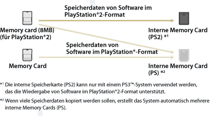

Spiel > Spielen mit Software im PlayStation®2- und PlayStation®-Format > Verwenden von Speicherdaten auf Memory Cards
Verwenden von Speicherdaten auf Memory Cards
Wenn Sie zum Spielen Speicherdaten auf einer Memory card (8MB) (für PlayStation®2) oder einer Memory Card verwenden wollen, müssen Sie die Daten auf eine interne Memory Card auf der Festplatte kopieren. Zum Kopieren der Daten benötigen Sie einen Memory Card-Adapter (separat erhältlich).
Hinweise
- Einige Softwaretitel im PlayStation®2- oder PlayStation®-Format werden auf dem PS3™-System anders als auf einem PlayStation®2- oder PlayStation®-System ausgeführt oder sie werden auf dem PS3™-System nicht ordnungsgemäß ausgeführt.
- Außerdem kann Software im PlayStation®2-Format auf einigen PS3™-Systemen nicht ausgeführt werden. Näheres dazu finden Sie unter [Typen abspielfähiger Discs] oder auf der SCE-Website für Ihre Region. Sie können auch in der Dokumentation zum PS3™-System nachschlagen.
1. |
Wählen Sie |
|---|---|
2. |
Den Adapter der Memory Card mit dem PS3™ System verbinden und eine Memory Card einführen. |
3. |
Wählen Sie das Icon der gespeicherten Daten, die Sie von der eingeblendeten Memory Card kopieren wollen und drücken Sie dann die |
4. |
Wählen Sie [Kopieren]. |
5. |
Ordnen Sie Steckplätze zu. |
 (Spiel) >
(Spiel) >  (Memory Card-Dienstprogr. (PS/PS2)).
(Memory Card-Dienstprogr. (PS/PS2)). (Memory Card (PS)) oder
(Memory Card (PS)) oder  (Memory Card (PS2)) wird eingeblendet.
(Memory Card (PS2)) wird eingeblendet. (Neue interne Memory Card erstellen) und erstellen nach den Anweisungen auf dem Bildschirm eine interne Memory Card.
(Neue interne Memory Card erstellen) und erstellen nach den Anweisungen auf dem Bildschirm eine interne Memory Card.Anmerkungen
- Je nach Datentyp werden Speicherdaten von einer Memory card (8MB) (für PlayStation®2) oder einer Memory Card wie unten gezeigt auf eine interne Memory Card kopiert.
- Bei manchen gespeicherten Daten kann der Kopiervorgang bis zu einigen Minuten dauern.
- Zum Kopieren aller gespeicherten Daten auf einer Memory Card (8MB) (für PlayStation®2) oder einer Memory Card die Memory Card in Schritt 3 wählen,
 -Taste drücken und dann [Kopieren] aus dem Menü „Optionen“ wählen.
-Taste drücken und dann [Kopieren] aus dem Menü „Optionen“ wählen. - Kopieren kann für einige Speicherdaten untersagt sein. Beim Verwenden solcher Daten in einem PS3™ System, Funktion [Verschieben] in Schritt 4 wählen. Die gespeicherten Daten werden auf die Festplatte transferiert und von der Memory Card gelöscht.
- Sie können die gespeicherten Daten später zurück auf die Memory Card verschieben.

Kopieren gespeicherter Daten auf eine Memory Card
Kopieren Sie auf die Festplatte gespeicherte Daten von Software im PlayStation®2-/PlayStation®-Format auf eine Memory Card oder eine Memory Card (8MB) (für PlayStation®2). Sie müssen zum Kopieren der Daten einen Memory Card-Adapter (separat erhältlich) verwenden.
1. |
Wählen Sie |
|---|---|
2. |
Verbinden Sie den Memory Card-Adapter mit dem PS3™-System und setzen Sie eine Memory Card ein. |
3. |
Wählen Sie das Icon der zu kopierenden Speicherdaten von |
4. |
Wählen Sie [Kopieren]. |
 (Interne Memory Card (PS)) oder
(Interne Memory Card (PS)) oder  (Interne Memory Card (PS2)), dem Speicherort der Daten, und drücken Sie dann die
(Interne Memory Card (PS2)), dem Speicherort der Daten, und drücken Sie dann die Anmerkungen
- Mehrere Speicherdaten auf einer internen Memory Card können nicht zusammen auf eine Memory Card gespeichert werden.
- Kopieren kann für einige Speicherdaten untersagt sein. Beim Verwenden solcher Daten auf einem PS3™-System wählen Sie in Schritt 4 [Verschieben]. Die gespeicherten Daten werden auf die Festplatte verschoben und von der internen Memory Card gelöscht.
- Sie können die gespeicherten Daten später zurück auf die Memory Card verschieben.